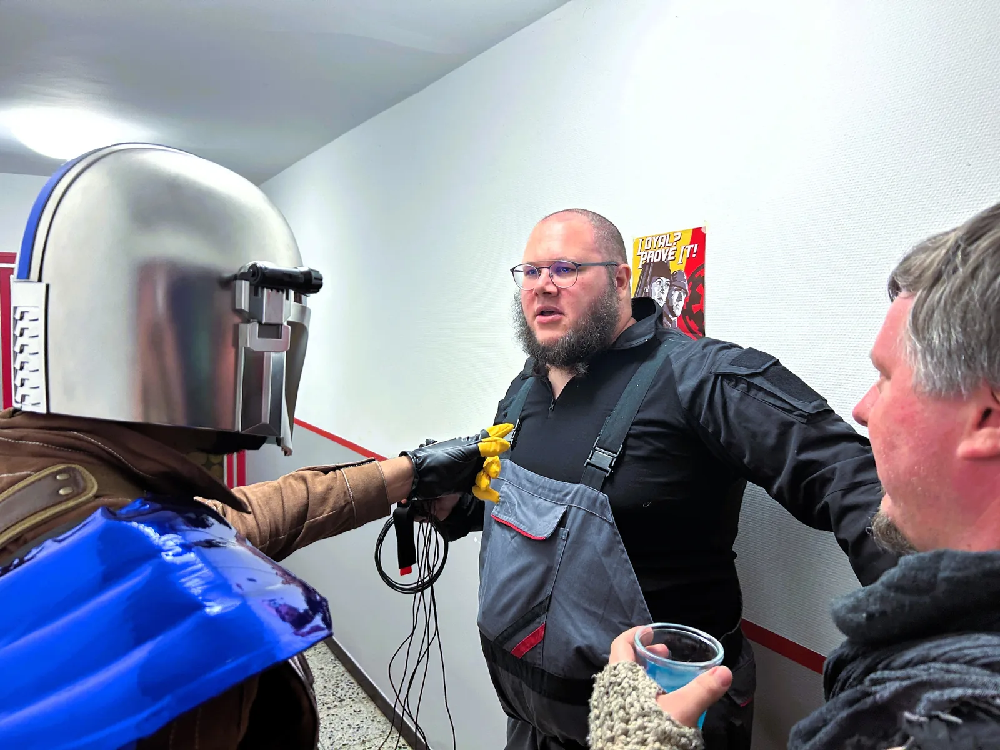

Datum
17.–19. September 2027
Dunkle Zeiten ziehen über die Galaxis. Auf Kokosta III treffen imperiale Interessen, die Geschäfte des Kartells und der Widerstand gegen das Imperium aufeinander.
Unaufhaltsam weitet das Galaktische Imperium seinen Einfluss aus. Selbst entlegene Systeme, fernab der großen Handelsrouten und politischen Zentren, geraten zunehmend unter den Schatten der imperialen Kriegsmaschinerie.
Nun hat dieser Schatten Kokosta III erreicht. Auf den ersten Blick ist der abgelegene Planet kaum mehr als ein unbedeutender Außenposten am Rand der Galaxis. Doch tief unter seiner Oberfläche lagert ein Vermögen: gewaltige Diamantvorkommen, deren Minen unglaubliche Profite versprechen.
Und wo Reichtümer locken, folgen jene, die bereit sind, dafür jedes Risiko einzugehen. Doch nicht jeder auf Kokosta III heißt die neuen Gäste willkommen.
Die Bewohner beobachtet die zunehmende imperiale Einflussnahme mit großer Sorge und versuchen ein Bündnis mit der Allianz zu schließen.
Zwischen imperialen Interessen, den Geschäften des Kartells und dem Widerstand gegen das Imperiale Regime wird Kokosta III zum Schauplatz eines gefährlichen Spiels.

Wir spielen nach dem Prinzip DKWDDK – „Du kannst, was du darstellen kannst.“
Es gibt keine Charakterwerte, Fähigkeitenlisten oder Punktesysteme, die darüber entscheiden, was dein Charakter kann. Wenn du etwas glaubwürdig darstellen kannst und deine Mitspieler darauf eingehen können, kannst du es ins Spiel bringen. Dabei gilt immer: Schönes gemeinsames Spiel geht vor Gewinnen.
Fading Stars ist ein Sandbox-LARP.
Es gibt keine vorgegebene Geschichte, die ihr auf einem bestimmten Weg lösen müsst. Die Welt, ihre Fraktionen, Konflikte und Interessen bilden den Rahmen – was daraus entsteht, liegt bei euch. Eure Entscheidungen können Auswirkungen haben, Bündnisse können entstehen oder zerbrechen und Konflikte können vollkommen anders verlaufen, als ursprünglich erwartet.
Es gibt also nicht den einen „richtigen“ Weg und auch nicht die eine Seite, die gewinnen muss.
„Wirklich Wirklich“ bedeutet: Das Gesagte ist OT ernst gemeint.
Damit könnt ihr innerhalb einer laufenden Szene deutlich machen, dass etwas keine Aussage eures Charakters ist, sondern ein tatsächliches Bedürfnis oder eine tatsächliche Grenze.
Beispiel:
„Ich möchte da wirklich wirklich nicht mitgehen.“
Eine solche Aussage wird nicht diskutiert oder im Spiel übergangen. Die Grenze ist zu respektieren. Wenn eine Situation vollständig gestoppt werden muss oder tatsächlich etwas passiert ist, geht die OT-Sicherheit selbstverständlich immer vor dem Spiel.
Infight findet ausschließlich nach vorheriger Absprache und mit Zustimmung aller Beteiligten statt.
Infight bedeutet dargestellter körperlicher Kampf ohne LARP-Waffen, beispielsweise Ringen, Schubsen oder eine gespielte Kneipenschlägerei.
Dabei gilt ganz einfach:
Wir spielen einen Kampf – wir prügeln uns nicht wirklich.
Schläge, Tritte oder andere Aktionen mit echter Verletzungsabsicht haben auf der Veranstaltung nichts verloren. Auch bei abgesprochenem Infight sind alle Beteiligten dafür verantwortlich, aufeinander zu achten und die eigenen Grenzen sowie die Grenzen ihrer Mitspieler zu respektieren.
OT-Sicherheit und persönliche Grenzen stehen immer über dem Spiel.
Auf Kokosta III wird es eine Cantina als zentralen Treffpunkt für alle Spieler geben.
Dort könnt ihr euch zwischen euren Geschäften, Missionen und politischen Intrigen treffen, Kontakte knüpfen, Informationen austauschen oder einfach etwas trinken.
Eine Auswahl an Getränken wird von uns bereitgestellt. Zusätzlich freuen wir uns, wenn wir das Angebot gemeinsam mit euch nach dem BYOB-Prinzip – Bring Your Own Bottle erweitern können.
Wenn ihr möchtet, bringt also gerne passende Getränke mit, die ihr in der Cantina mit anderen teilen könnt. So entsteht hoffentlich eine abwechslungsreiche Auswahl und ein lebendiger Treffpunkt für alle Bewohner und Besucher von Kokosta III.
Auf der Veranstaltung sind ausschließlich handelsübliche nicht modifizierte NERF-Blaster sowie LARP Waffen zugelassen.
NERF-Blaster dürfen technisch nicht verändert oder in ihrer Leistung gesteigert worden sein. Optische Veränderungen, beispielsweise eine zum Charakter passende Lackierung oder Gestaltung, sind erlaubt, sofern dadurch die sichere Nutzung nicht beeinträchtigt wird. LARP-Waffen müssen für den Einsatz im LARP geeignet und in einem sicheren, unbeschädigten Zustand sein.
Jeder Teilnehmer ist selbst dafür verantwortlich, dass die von ihm mitgebrachten und verwendeten Waffen sicher und regelkonform sind. Eine Prüfung oder Freigabe der Waffen durch die Orga findet nicht statt. Beschädigte, unsichere oder anderweitig ungeeignete Waffen dürfen nicht verwendet werden. Bitte geht jederzeit verantwortungsvoll mit euren Waffen um und nehmt Rücksicht auf eure Mitspieler.
Grundsätzlich ist jede Art von Pyrotechnik verboten. Ausnahmen können mit der Orga geklärt werden.
IT-Konflikte, Verrat, Drohungen und Feindschaften dürfen gerne Teil des Spiels sein. OT erwarten wir trotzdem einen respektvollen Umgang miteinander.
Belästigungen, absichtliche Grenzüberschreitungen, gefährliches Verhalten oder massiv störendes Verhalten werden nicht mit „war doch nur IT“ gerechtfertigt.
Bei schwerwiegendem oder wiederholtem Fehlverhalten behält sich die Orga vor, von ihrem Hausrecht Gebrauch zu machen und Personen von der Veranstaltung auszuschließen beziehungsweise des Veranstaltungsgeländes zu verweisen.
Die Teilnahme an der Veranstaltung ist ausschließlich volljährigen Personen ab 18 Jahren gestattet.
Für die Teilnahme ist eine gültige private Haftpflichtversicherung erforderlich. Mit der Anmeldung bestätigt jeder Teilnehmer, über einen entsprechenden Versicherungsschutz zu verfügen.
Die Veranstaltung ist nicht gewinnorientiert. Sämtliche Teilnahmebeiträge dienen ausschließlich der Deckung der im Zusammenhang mit der Planung und Durchführung der Con entstehenden Kosten. Etwaige Überschüsse werden vollständig für veranstaltungsbezogene Ausgaben verwendet.